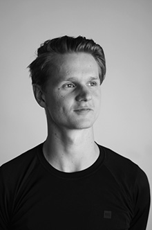
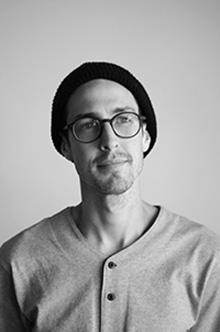

Caleb Creative Director
Caleb grew up in Winnipeg in a castle with his 3 little sisters and mom. Caleb began his film career in 2008 after seeing the Wes Anderson movie, “The life Aquatic with Steve Zissou.”Caleb has a great passion to spread beautiful messages and inspire people through film and art. After attending the School of Film and Technology in Melbourne Caleb came back to Canada to begin his journey into film.
Jamie Camera/Production
Jamie grew up in a quaint little village on the outskirts of Edmonton known as Sherwood Park. He is a die hard skateboarder and visual dream maker. Jamie has 2 cats and a beautiful wife who he adores. Jamie hopes to travel and film skateboarding culture Vienna in the near future for “Girl” Skate Co.